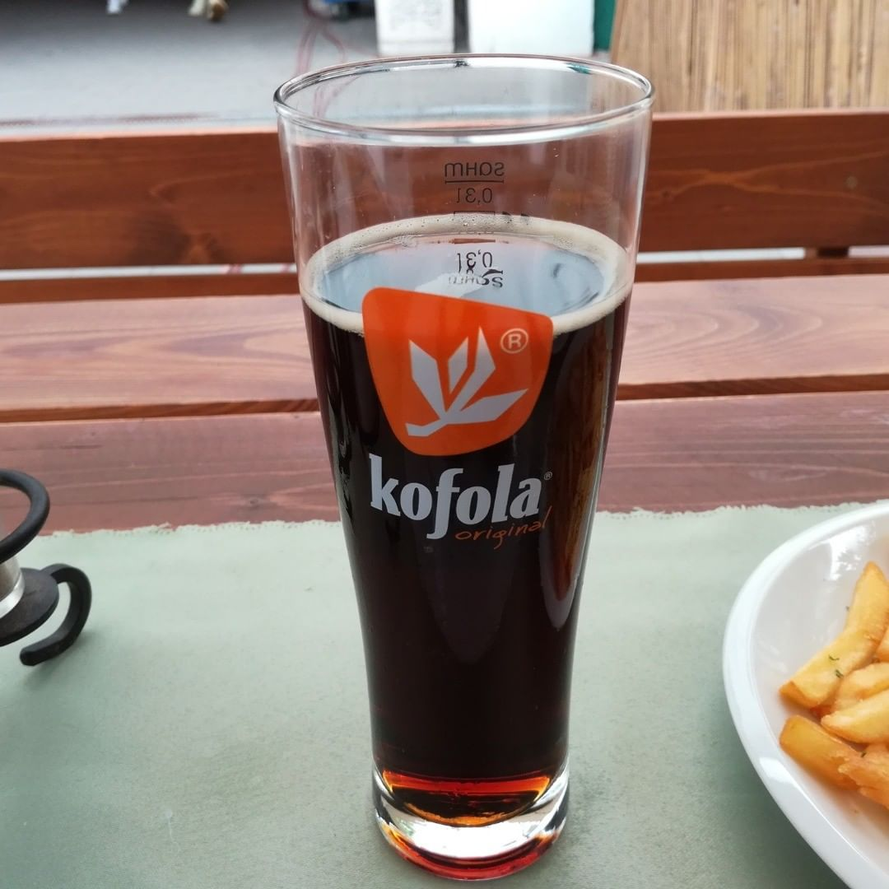

Uhorkový šalát podľa @peterskvarenina12 — Normy Jedál
15.6. 2020 som oslavoval svoje 30. narodeniny.
Oslavu som si rozdelil do troch častí:
1. časť oslavy prebehla v reštaurácii Wetzlerov dom na Hlavnej ulici v Trnave. Kde som si dal pizzu Hawaii a 0,3 l Kofoly.
2. časť oslavy prebehla taktiež v reštaurácii Wetzlerov dom. Kde som si dal Viedenský rezeň s hranolkami a kečupom. Zapil som to 0,3 l Kofoly.
3. časť oslavy prebehla doma. Kde sme si dali šampanské Hubert club biele sladké a medovú tortu Marlenka.
Marlenku som kúpil v Bille City Arena Trnava a šampanské mám z Tesca.
#trnava #peter #oslava #narodeniny #oslavanarodenin #wetzlerovdom #pizza #pizzahawaii #kofola #kofolaoriginal #viedenskyrezen #kecup #hranolky #uhorkovysalat #kdejem #kde_jem